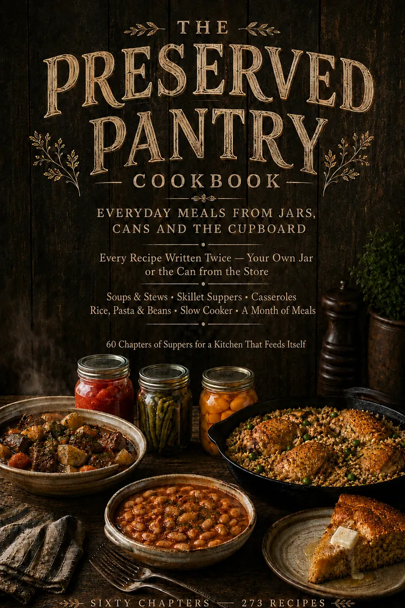

Take one, or take the pair
They are built to work together — the Manual fills the jar, the Cookbook empties it — but each one stands on its own.

The Preserved Pantry Manual
How to put it up, and not poison anyone.
- 34 chapters across canning, dehydrating, freeze drying, fermenting and cold storage
- Every processing time cross-checked against USDA and NCHFP guidance
- Around 80 photographs, and the altitude tables you actually need
- 38 printable working sheets bound into the back — logs, labels, charts
- 261 pages
Best value · save $15
Both Books

The Complete Preserved Pantry
The whole loop — garden to jar to supper.
- Everything in both books, nothing held back
- 94 chapters, 273 recipes, 199 photographs
- The 38-sheet printable pack included
- 805 pages in total
- One download, both files
Book Two
The Preserved Pantry Cookbook
How to eat it, once it is on the shelf.
- 60 chapters and 273 recipes, from slow cooker suppers to the month-of-meals plan
- Every recipe written twice at once — your home-canned amount and the store-can equivalent, side by side
- The meat swap: every meat recipe works from a jar, a fresh cut, or the freezer
- Two indexes, including one organised by the jar in your hand
- 544 pages